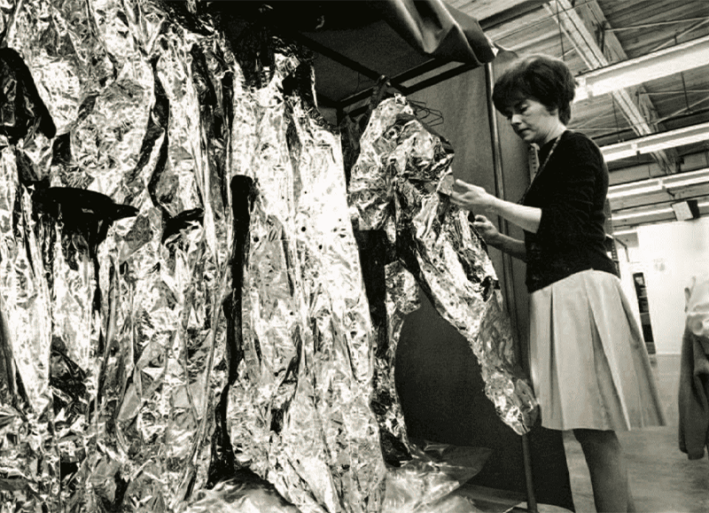
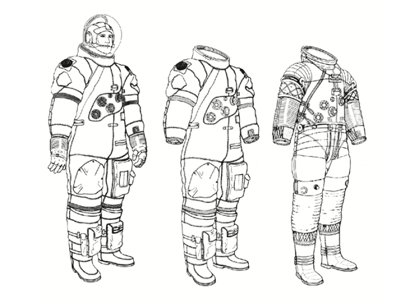

In 1966, when seamstresses at the International Latex Corporation arrived at its new Apollo Suit shopfloor in Frederica, Delaware, they were essentially “taught to sew again from scratch.” And for good reason: Compared to the company’s bras and girdles, the craftsmanship needed to fashion a spacesuit was, in every sense, out of this world.
The journey to this point had been improbable for a company whose grand name had initially belonged to a single founder and salesman, Abram Spanel, selling mail-order girdles through magazine ads. It was only thanks to one of Spanel’s first employees—his own TV repairman, MIT dropout Leonard (Lenny) Shepard—that ILC maintained a small “industrial” division researching government contracts. Shepard was optimistic that the firm’s expertise in rubber, nylon, and strapping could provide an answer to work in space.
In 1963, when NASA’s Apollo mission was still in its infancy, the agency invited several private companies—including Hamilton Standard, David Clark Company, and ILC—to design a suit capable of sustaining astronauts on the moon. It was a major federal contract, and the bra-and-girdle maker was a dark horse. Compared with its competitors, ILC had far less aerospace experience and was best known for manufacturing undergarments.
But as it turned out, no company was better suited to tackle the physical demands of making a suit that was both comfortable and reliable.

THE TEAM: Jane Butchin, Delema Domegys, Inspector Mary Todd, and others on the shop floor at the Dover, Delaware, ILC plant, June 28, 1967. Courtesy of ILC Dover, Inc.
Key to these demands were NASA’s painstaking engineering standards, which pushed the very limits of the equipment and seamstresses’ own techniques. The tolerances allowed—less than a 64th of an inch in only one direction from the seam—meant that yard after yard of fabric was sewn to an accuracy smaller than the sewing needle’s eye. To achieve such precision, many women used a modified treadle that, instead of starting and stopping a Singer sewing machine’s operation, fired one stitch per footfall through the multiple layers of a suit’s surface. For the hundreds of feet of seams in each suit, this meant venturing stitch by tiny stitch across the length of a football field, with a single misstep leading to a discarded suit.
At the same time that ILC’s seamstresses were being asked to meet unprecedented precision standards, they were denied traditional tools, such as fastening pins used to maintain sewing accuracy. To a garment whose reliability depended on an impermeable rubber bladder, mechanical aids like pins were an inherently risky proposition. (The company learned that lesson in 1967, after a single pin was discovered between the layers of a suit prototype, leading to the installation of an X-ray machine on the shop floor that would regularly scan the suits for errant fasteners.)
The most valued seamstresses were those like Roberta Pilkenton, who could sew together the outermost layer of the Apollo suit, the Thermal Micrometeoroid Garment (TMG). Pilkenton crafted the TMG’s 17 concentric layers, with hundreds of yards of seams, without a single tool except her own guiding fingers. Those who persisted with pins as an aid to assembly were required to check out a numbered set from a supervisor at the beginning and end of their shift, and the sets were accounted for daily. Those flouting regulations and bringing extra pins from home could, notoriously, find one of them pricked into their backside by an irate supervisor.
If the precision involved in sewing concentric suit layers seems fastidious, then the task facing the “gluers”—who assembled each layer of the suit’s concentric surfaces together before final sewing—was even more finicky. Layering flexible latex with whisper-thin layers of Mylar (which kept astronauts cool), Dacron (which held suit layers together), and Kapton (which protected against extreme temperatures), they used paintbrushes and a specially formulated glue to assemble diaphanous sheets into man-shaped forms. The assembly tolerance was no more than the thickness of a single Mylar layer. Each of the 16 glue-assembled layers needed not just to fit the astronaut’s body shape, but, like dolls in a Russian matryoshka, to be infinitesimally larger than the layer it contained.
Read more: “The Best Photos of the Artemis II Mission”Any visitor to ILC’s Dover plant—or the new facility into which operations expanded in 1966—could observe the care and craftsmanship of those who glued and sewed the Apollo suit’s layers together. What they could not freely observe, however, was the most closely guarded craft of ILC’s suit assembly process: the “dipping” of layers of rubber to form the ribbed sections, or “convolutes.” It was these assemblies that gave ILC’s suit its essential mobility. The “dippers” who accomplished this task were, like their colleagues behind Singer machines, using skills found elsewhere in the Playtex organization. Until 1966, pipes carrying liquid latex ran from the same tanks that supplied the girdle and bra assembly lines to the dipping room.
The elaborate process of assembling a convolute had been the key to ILC’s suit designs since the early 1960s, and its equally delicate manufacture was the company’s most closely guarded industrial secret. Even so, it was more a craft than a science, and only three or four employees had the right “touch” to consistently produce usable components.
In retrospect, however, ILC’s unique skill seems to have gone beyond these individual crafts and into the delicate art of their collective synthesis. Crucial to this larger success seems to have been the professional respect accorded to, and the practical collaboration engaged in with, ILC’s craftswomen. Indeed, some of ILC’s most effective engineers, such as Robert Wise, took weeks of sewing lessons from the seamstresses to better understand how fingers, fabric, and thread interacted in the suits’ complex assemblies. In practice, the craftswomen were allowed, and even encouraged, to suggest improvements in procedures and assemblies as they were continually developed.

THE RIGHT FIT: Arlene Thalen, an ILC inspector, is examining Mylar insulation layers. The layers were glued from patterns, and then inserted one inside the other to form the insulation layers of the Thermal Micrometeoroid Garment cover layer. Courtesy of ILC Dover, Inc.
Emblematic of this culture were the late-night collaborations between seamstress Eleanor Foraker (pulled from Playtex’s diaper-cover assembly line in 1964) and Lenny Shepard, by that point the project head of Apollo suit development at ILC. Striving to meet deadline after deadline, Foraker would often be sewing late into the night at the plant. In the final stages of a suit’s manufacture, the multilayered, man-shaped assembly could not be folded or squashed under a normal sewing machine, and instead had to be sewed on one of two Singer machines—dubbed “Big Moe” and “Sweet Sue”—modified to have an elongated arm and massive sewing bed so an entire suit could be moved under its needle. For each of these early deadlines, Shepard himself would stay up with Foraker, helping to slide and rotate the suit during the final stages of assembly, and quizzing the seamstress on her technique and expertise.
While ILC managed to integrate technology and technique within its corporate body, it proved incapable of fully adapting to Apollo’s organizational culture. The most prominent failures centered on systems management procedures.
Particularly vexing to NASA was ILC’s avoidance of paperwork—not just in the everyday transport of spacesuits, but in their manufacture. From the first days of its spacesuit prototypes, ILC had eschewed traditional engineering media—measured drawings, charts, and memoranda—in favor of those derived from its soft-goods heritage: patterns and instructions. ILC’s attitude came through in a seamstress’s comment to a NASA technical team in 1968: “It might look all right on that piece of paper, but I’m not going to sew that piece of paper.”
A much larger drama unfolded over the complex issue of “configuration management,” a system developed in the Atlas (ICMB) Missile program to precisely track the origin and details of each part of a complex technological artifact. The procedures were an enormous challenge for ILC. It was hard enough in a North American Aviation or Grumman factory to keep track of the origin, assembly, and destination of every spacecraft part; NASA demanded the same paper trail for the 4,000-plus pieces of fabric in the 21-layer Apollo suit as well. Such a requirement—a process that could treat every thread, nylon tape, and fabric swatch in the suit with the same administrative tenacity as individual aluminum assemblies—proved extremely difficult to meet.
Read more: “The Violent Birth of the Moon”
In February of 1967, with the delivery of the first three Apollo suits, matters came to a head. NASA initially refused to accept the suits, not for any physical defect in their manufacture, but rather because their configuration—the position, size, and origin of every part—was not adequately documented. A weeklong crash effort employed seven engineers to improvise an acceptable paper trail for the suits.
To adapt to this context, ILC added a new legion of employees trained in systems engineering culture to its roster of sewers, dippers, and gluers. In the heat of the space race, however, ILC could not hire as many systems engineers as it needed. So it devised a plan for a literal transplant of skills: While traveling back and forth to Texas, Lenny Shepard had come to know key managers at Ling-Temco-Vought (LTV), then a massive aerospace conglomerate (and one of the original eight bidders for the Apollo suit). Admitting “we knew all there was to know about suits, but we sure didn’t know very much about the paper,” Shepard arranged to contract 56 LTV specification writers, configuration managers, and systems engineers to come to the new plant. Once the LTV managers arrived in Delaware, Shepard arranged for the “smartest” new ILC employees to shadow each one until the skills were embedded in his own people.
If ILC slowly suited itself to NASA’s norms, then the systems engineers also, gradually, accepted some of ILC’s departures from military-industrial norms. After an extended on-site meeting in the summer of 1968, a crucial decision was taken to allow the handcrafted artifacts—the patterns and procedures of suit construction, or Tables of Operations—to temporarily substitute for more traditional engineering drawings. After suit development and manufacture, ILC would not be required to issue separate drawings solely to satisfy NASA. Such drawings would still be produced to satisfy the contractual requirements of ILC, but as beautifully precise forensic descriptions—not instructions.

PERFECT PATTERNS: A composite of the final delivery drawings produced by ILC from 1970, showing an A7LB suit as worn by an astronaut with gloves and helmet (left), with Thermal Micrometeoroid Garment (TMG) layer (middle), and showing only Pressure Garment Assembly (PGA) (right). Courtesy of ILC Dover, Inc.
That final realm of compromise concerned, perhaps, the most intimate aspect of spaceflight: the astronauts’ bodies. The Apollo spacesuit demanded a couture-like custom fit for each traveler. To expedite the physical measurements, ILC hired Richard Ellis, a former woodworker, to fly around the country and take measurements of each astronaut so that an individual suit pattern could be developed for each astronaut. In the hubbub of the astronaut’s training schedules, time for the elaborate series of measurements was not easy to come by—Neil Armstrong once met with Ellis in a California hotel bathroom.
Subsequent alterations, including even the tightening or loosening of laces and straps, were accomplished during one-on-one “fit-checks” with each astronaut, with forms recording each level of finesse. Indeed, like any couture customer, the astronauts would often change their minds about fit details, sometimes causing their entire suit to be taken apart and carefully reassembled. A final move toward comfort, however, leaned more toward bras than battlefields: In response to complaints about comfort, a layer of fuzzy girdle liner was sewn into each garment’s pressure bladder.
The custom fitting of each suit to each astronaut provides a final, illuminating story of the conflicts between a systems-engineering culture and ILC’s intimate expertise. In every other part of the Apollo effort, the same documentation that charted the 4,000 individual elements of the Apollo suit would assign new serial numbers and corresponding paperwork to any adjusted part, or any deviation from the standards set by a part’s previous assembly. To NASA system engineers, then, every change to the suit—including both changes in dimensions to fit each astronaut and changes in configuration to enhance individual astronauts’ comfort—called for enormous additional documentation. From the ILC perspective, this was tantamount to arguing that a shirt or pair of trousers became a different object when altered, or even buttoned—an argument with its own strict logic, but one that devolved into absurdity the closer the mechanism came to the terminal disorder of the human body.
As with the larger conflicts surrounding ILC’s procedures, the resolution was a hard-won compromise. For elements toward the outside of the suit, especially in the covering Thermal Micrometeoroid Garment (TMG), changes followed standard systems engineering protocols. A longer zip or a differently shaped piece of Velcro was subject to the same “configuration management” procedures that held sway in any other part of the massive Apollo effort, with up to several changes a day meticulously recorded. Closer to the astronaut’s skin, however, the engineering logic evaporated in favor of a humbler logic of clothing.
While each glove finger, anklet, or undergarment was assigned a tracking serial number, it was also given a size range—from small and medium to large—within which its astronaut-specific dimensions could be specified. Once agreed upon, the only problem came with sizing the most intimate part of the suit assembly, the urinary collection device (UCD) that slid over the astronaut’s penis. After an “incident” with the first astronaut fitted for the device, the UCD’s designations were changed from “Small, Medium, Large” to “Large,” “Extra Large,” and “Extra-Extra Large.”
There is a deep irony to all of this—a central, incongruous fact of Apollo’s history. For all the systems management efforts spent acclimatizing ILC to NASA’s military-industrial milieu, the most heavily reproduced Apollo artifact—the Apollo spacesuit seen on stamps, in statuettes, and on screen—is, in its essence, a throwback, a regression, the sole exception to a rule. For, even as ILC’s most dedicated managers would later admit, the forest of paperwork thrown around the suit’s craftsmanship was, essentially, “a bit of a smokescreen,” hiding a hand-crafted nature.
Whether in the “dipping” of convolutes, the gluing of layers, or the sewing of the final suit, ILC’s process was so dependent on the individual craftsmanship of its employees that attempts to precisely enumerate the procedures used were inherently impossible. As a seamstress later reflected, “No two people sew alike.” While even a change of a 16th of an inch in a formalized sewing procedure had to be debated and recorded on a systems engineering “configuration board,” the procedures documented in paperwork were never precisely the ones used to assemble the suits.
NASA’s consistent delight with ILC’s suits and constant frustration with the firm’s paperwork were not contradictory. In fact, they were of a piece. As the many counterexamples to ILC’s expertise show, any attempt to fit the human body precisely into the procedures of systems management seemed destined for difficulty. ILC’s mastery of the body and the tucking, tweaking, and tailoring required for its comfort placed it inherently at odds with the rest of Apollo’s organizational framework. Its success in negotiating that framework—just enough to secure and maintain the suit contract into the 1970s—was itself a marvel of layered adaptation. 
This article is adapted from “Spacesuit,” by Nicholas de Monchaux, and is reprinted with permission from MIT Press Reader.